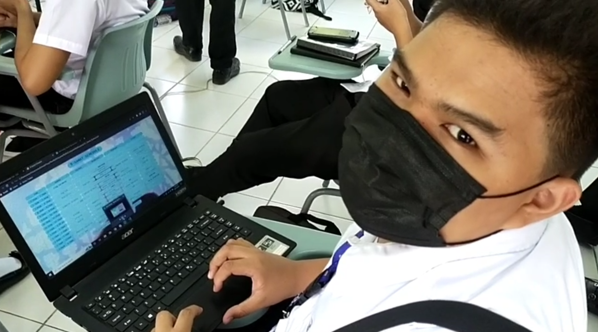

About the Author
The man. The myth. The comedy.
I'm Jian Franco Nuñez...
I'm a scholar from 9-Samat, Batch 2026. My MBTI personality type is ENTP.
I like my music powerful in meaning and in headbanging. My favorite colors
lie within cyan to violet in the color wheel. I'm also interested in a lot
of things, including the usual stuff like movies, gaming, and food, but
also particularly writing and memes. I pride myself in my intuition and
creativity. I halfly pride myself in my broken humor.
...and this is Submerged,
This is my submission for the Computer Science 3, 1st Quarter Project:
my eldritch Pandora's box. It is a satirical news website born from
the traits I've said earlier. I've chosen the Lovecraftian deep sea as
the setting for this joyride as a stand-in for the forbidden knowledge
trope, replacing the cursed with the comical. Most of the images were
made by yours truly using Canva and Photoshop. Meanwhile, the photo above
was taken by Charles Daniel Bundalian, a classmate and close friend of mine.
It was conceived with both reasons of exploring my skills and of just
messing around in mind. Proceed with caution.
because some things are better left pristine.